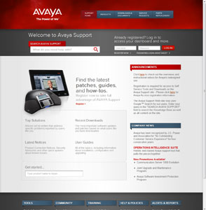
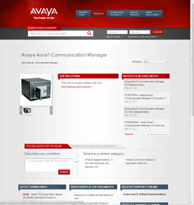

- 
- 
I led the development of Avaya's new support website's administration console. The console is used by non-technical business admins to make changes to all aspects of the support website.
Avaya is a global information technology and telecommunications company. I worked on this project while at GLG.
Highlights
- No technical knowledge required. Users can modify any part of the support site without any knowledge of HTML or CSS. A variety of custom Javascript tools, including WYSIWYG editors, allow styling and creating complex markup without actually dealing with styling or markup.
- Consistent and Error-free. Error checking, from the DB layer, to the backend app layer to frontend JavaScript validation ensure the support site maintains a healthy state without having to rely on human diligence.
- Integrated. The admin console communicates with any number of backend servers to manage the synchronization of product as images.
Technologies Used
- Java with Spring 2, Struts 2, and MyBatis
- jQuery, Backbone, Underscore, and Mustache on the frontend
- Clustered Oracle SQL Servers
- Continuous integration with SVN and Jenkins
- Load-balanced Weblogic servers